地政学
台南は台湾海峡に面し、安平の港と旧城の記憶を持つ南部の要地です。台北の首都機能とは違い、南部の産業、農漁村、歴史観光を結ぶ地域政治の重心です。海峡情勢も日常へ影を落とします。港湾と空港の備えも問われます。
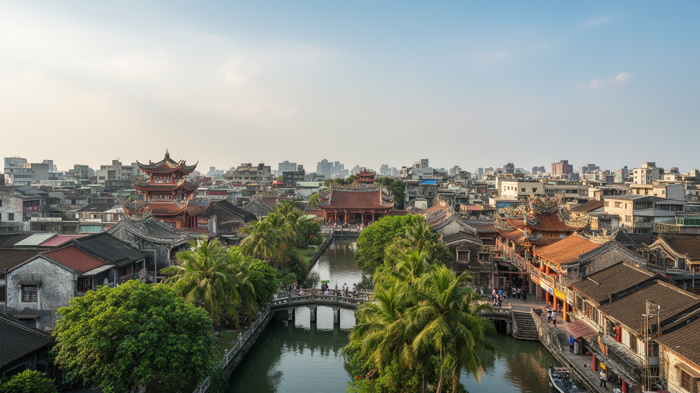
🇹🇼 台湾 / 東アジア / World City Atlas
台湾海峡に面した旧都。廟、夜市、安平の港、オランダ時代の記憶、半導体産業、農漁村、水害対策、日常の食文化が同じ都市圏で重なっています。
都市の骨格
台南は台湾の政治史を刻む旧都でありながら、南部科学園区、港湾、農漁村、湿地を抱える実務的な都市です。古い街路と新しい工場が近くにあります。
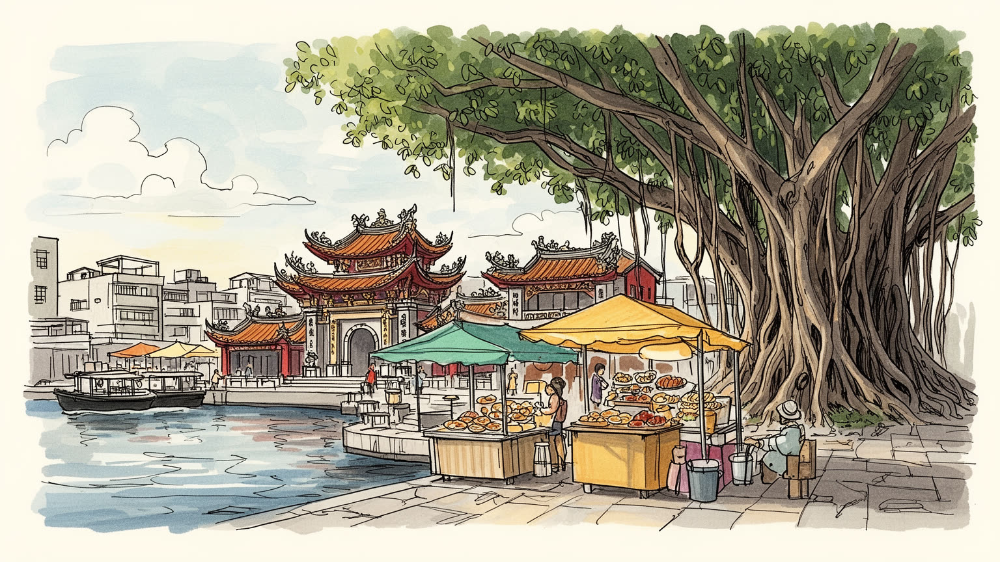
台南は台湾海峡に面し、安平の港と旧城の記憶を持つ南部の要地です。台北の首都機能とは違い、南部の産業、農漁村、歴史観光を結ぶ地域政治の重心です。海峡情勢も日常へ影を落とします。港湾と空港の備えも問われます。
南部科学園区の半導体、機械、食品加工、農漁業、観光が重なります。工場勤務、研究開発、屋台、寺廟の周辺商業、港や市場の仕事が日常を支えます。賃金差や通勤距離に加え、水と電力の確保も論点です。都市の実務です。
台南の廟は観光名所より先に、地域の暦、寄付、祭礼、商売、家族の祈りを束ねる場所です。仏教、道教、民間信仰が路地と市場の生活に深く入り込みます。祭りは街路の記憶を更新します。新住民の参加も広がっています。
赤崁楼、安平、神農街、夜市は歩きやすい名所ですが、住民には暑さ、冠水、交通、古家の維持、観光混雑がのしかかります。食と路地の魅力は生活の上に成り立ちます。静けさ、歩道、日陰の整備も欠かせない街です。
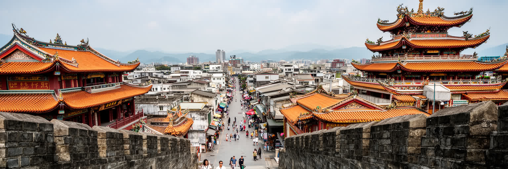
台南は台湾の都市史を読む入口になります。台北の高層行政都市とは違い、ここでは政治の記憶が低い街路、廟の前庭、古い商家、学校、城跡、港町の地名に散らばっています。オランダ東インド会社の拠点、鄭氏政権、清代の府城、日本統治期の近代化、戦後の地方行政が同じ市街地に重なり、街を歩くことが年表を横切る行為になります。旧城内の狭い路地は観光用に保存された舞台だけではなく、子どもの通学、買い物、葬儀、祭礼の道でもあります。赤崁楼や孔子廟の周辺では、歴史建築の説明板よりも、隣の食堂や市場の湯気と香辛料の匂いが都市の連続性を伝えます。台南の旧都性は過去を展示する力ではなく、過去を日常の中で使い続ける力にあります。だから保存の課題も単純ではありません。古い家を店に変えると通りは賑わいますが、家賃や騒音で住民が離れれば歴史の生活感は薄くなります。学校や市場、廟の管理者、修復職人、観光業者が折り合いをつけることで、旧都は博物館ではなく暮らせる都市であり続けます。都市の重心が新しい駅前や科学園区へ移っても、旧城の道は行政、教育、信仰、商売の基準点であり続けます。台南の歴史は中心を失った遺跡ではなく、別の中心が増えてもなお人を戻す磁力として働いています。だから新しい計画ほど、旧市街の尺度と記憶を読み替える慎重さが必要になります。旧都を読む姿勢が、都市更新の質を決めます。街路の深さもそこにあります。
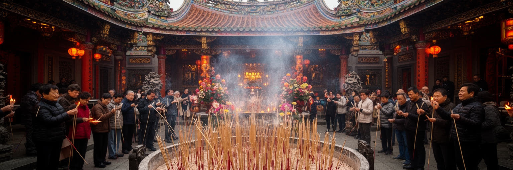
台南の廟は、観光写真の背景ではなく都市を動かす制度に近い存在です。媽祖、王爺、城隍、土地公を祀る大小の廟が町内の境界を作り、祭礼、寄付、灯籠、神輿、爆竹、宴席、露店を通じて人の関係を結び直します。信仰は個人の内面だけでなく、商売の信用、家族の記憶、移住者の参加、地域の防災や福祉にも関わります。廟の前は、朝は通勤路、昼は年配者の休憩場所、夜は屋台や儀礼の舞台になり、同じ空間が時間帯で役割を変えます。都市開発で道路が広がり、マンションが増えても、祭礼のルートは簡単には消えません。台南を理解するには、建築の華やかさだけでなく、誰が準備し、誰が寄付し、誰が道を空けるのかを見る必要があります。宗教行事は交通規制や騒音を生むこともありますが、それを調整する交渉そのものが地域社会を保ちます。若い世代や新住民が役割を持てるか、SNSで広がる祭礼の映像が儀礼を消費物に変えないかも、信仰都市としての成熟を左右します。廟の台帳、料理を作る人、衣装を直す職人、楽隊や警備を担う人まで含めると、信仰は大きな地域経済でもあります。祈りは見えない感情で、同時に街路を使い、人を雇い、町内の記憶を更新する実務でもあります。廟の周辺に残る金紙店、供物の店、占い、軽食の屋台は、儀礼と生活を結ぶ小さな産業であり、都市の文化的な耐久力を支えています。祭礼の音と匂いは、台南の都市時間を刻む合図でもあります。
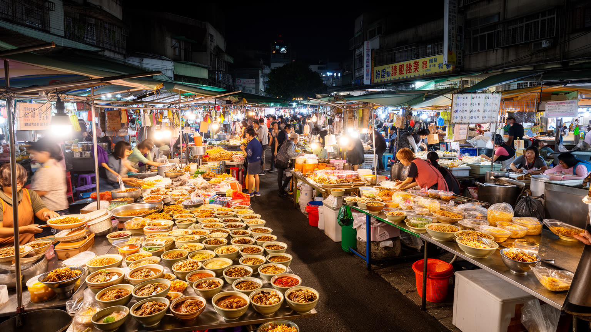
台南の食は、名物を並べるだけでは読み切れません。牛肉湯、担仔麺、蝦仁飯、棺材板、米糕、サバヒー粥、豆花や甘い菓子は観光客の目的地ですが、背後には朝の市場、漁港、屠畜、農村、調味料、家族経営の仕込みがあります。甘めの味付けや小ぶりな一皿は、気候、労働時間、寺廟の行事、港町の物流と結びついてきました。夜市は娯楽で、同時に若者のアルバイト、家族商売、観光消費、近所の夕食を受け止める場所でもあります。人気店の行列は都市の魅力を示しますが、SNSで広がる混雑、家賃上昇、観光向け価格、路上管理の問題も生みます。台南の食文化の強さは、料理名よりも、生活の小さな店がまだ街路に残っている密度にあります。店の継承には早朝の仕入れ、長い仕込み、家族の労働、衛生規制への対応が必要になります。味を守ることは懐古ではなく、働く人が休み、学び、設備を更新できる経済を作ることでもあります。食を通じて、台南の観光と生活は同じ鍋の中で煮込まれています。市場の通路、使い込まれた調理台、常連との短い会話、揚げ油と薬草茶の匂いは、ガイドブックに載りにくい都市資本です。食の名声が広がるほど、こうした小さな関係を壊さず受け継ぐ工夫が必要になります。農村や漁港との近さは、味の鮮度だけでなく価格や季節感にも影響します。台南の皿には、都市と周辺地域の分業が見えます。食べ歩きは、物流と労働の地図を歩くことでもあります。
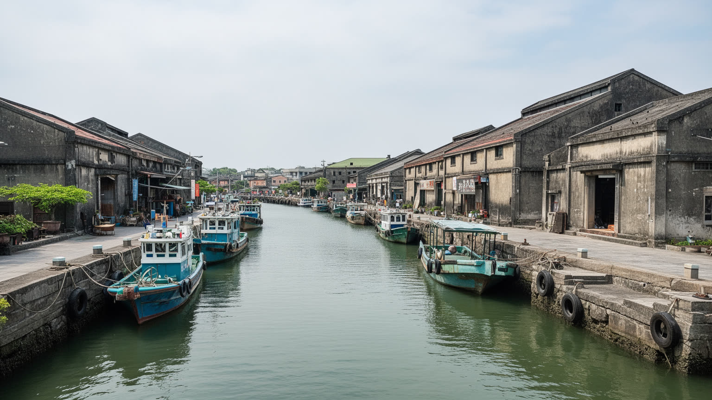
安平は台南を内陸の旧都だけでなく、海峡の都市として見せる場所です。かつての砂洲、潟湖、河口、港は地形を変えながら、貿易、軍事、漁業、移民、塩田、観光の記憶を抱えてきました。現在の安平では、古堡や老街を歩く観光客のすぐ近くに、漁港、住宅、学校、水辺公園、造船や倉庫の痕跡が残ります。港は巨大コンテナ都市ほど目立ちませんが、台南の海産物、歴史イメージ、休日の散歩、夕日の景観を支えています。海に近い土地には魅力がある一方、高潮、台風、塩害、湿地保全の問題も抱えます。安平を読むことは、観光地の古い石壁だけでなく、水路と砂洲が都市の形を変えてきた時間を見ることでもあります。観光開発が進むほど、駐車場、宿泊施設、土産物店、水辺の演出が増え、港町の生活は見えにくくなります。漁業や湿地の生態、古い集落の道幅を尊重できるかが、安平を単なる夕日の名所にしない条件になります。海辺の魅力は、風景だけでなく水害への備えと一体で考える必要があります。堤防や排水、湿地の回復、漁港の仕事、歩ける水辺が両立して初めて、安平は過去と未来をつなぐ港町であり続けます。海峡を向く地理は、観光の開放感だけでなく安全保障や物流の感覚も生みます。水辺の穏やかさの背後にある緊張を読むと、台南の海はより立体的に見えます。港町の記憶は、船が減っても地名と食と風に残り続けます。潮も見どころです。
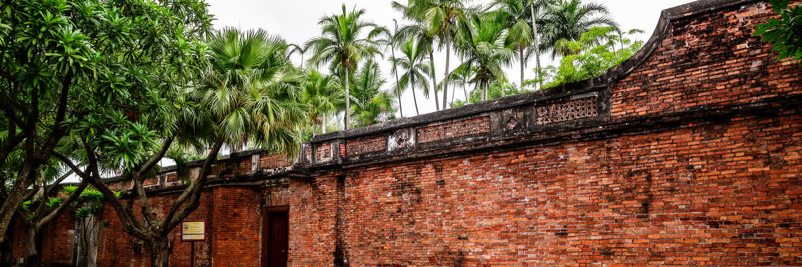
台南の四百年という語りは、祝祭だけでなく支配と交易の複雑さを含みます。オランダ勢力が築いたゼーランディア城の記憶は、台湾が早くから東アジア、東南アジア、ヨーロッパ商業の交差点だったことを示します。そこには先住民社会、漢人移民、宣教、砂糖や鹿皮の交易、軍事衝突が絡み、単純な植民地遺産観光には収まりません。現在の台南では、石壁や地名、博物館展示がこの時代を伝えますが、重いのは誰の視点で歴史を語るかです。外来勢力の到来を都市の国際性として誇るだけでは、先住民や労働、暴力の記憶が薄くなります。台南の歴史の厚みは、華やかな周年行事よりも、複数の記憶が一つの街に同居している点にあります。学校教育、展示、ガイドの言葉、土産物のデザインは、歴史の印象を大きく変えます。交易の成功と支配の痛みを同時に語れる都市ほど、台南は世界史の中で深く読めます。石壁の保存だけでなく、海図、交易品、言語、地名、先住民の移動を結び直すことが欠かせません。台南のオランダ記憶は、異国情緒ではなく、台湾が早くから複数の力に接続されていた証拠です。記憶を丁寧に扱えば、台南は植民地の痕跡を単なる観光記号ではなく、世界の交易と暴力を考える教材にできます。過去の接触を美談だけにしないことが、都市の国際性をより誠実なものにします。記憶の厚みを保つ姿勢が問われます。
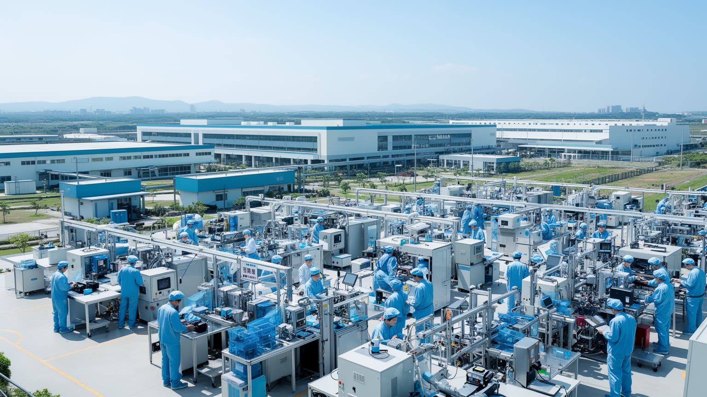
台南の現代経済を大きく変えているのは南部科学園区です。半導体、光電、精密機械、材料、研究開発の集積は、台南を歴史観光だけの都市ではなく、台湾の製造業ネットワークの中心的な結節点にしています。工場や研究施設は高賃金の専門職を呼び込み、道路、住宅、学校、商業施設の需要を押し上げる一方、水、電力、土地、交通、労働時間の負担も増やします。大学や専門学校は人材供給の基盤となり、古い中心市街地の食堂や廟と、科学園区のクリーンルームも同じ通勤圏にあります。台南の産業を読むには、半導体の輸出額だけでなく、現場労働者、下請け、家族の住まい、農地転用、環境負荷まで見る必要があります。旧都の落ち着きと技術産業の速度は、台南で同時に進んでいます。さらに、科学園区の成長は地域の所得を押し上げる一方、飲食、清掃、警備、配送、介護の人手不足も強めます。技術都市として成功するほど、生活を支える低賃金の仕事を軽視できなくなります。台南の競争力は、工場の能力と同じくらい、働く人が住み続けられる環境に左右されます。農地や漁村との距離が近いことも重みを持ちます。都市が工業へ傾くほど、食料生産、排水、土地利用、地域雇用の調整が必要になります。台南の産業政策は、最先端工場と周辺の生活圏を一体で見なければ成立しません。研究者が移り住む住宅地と、昔からの集落が隣り合うことで、教育や交通への期待も変わっていきます。
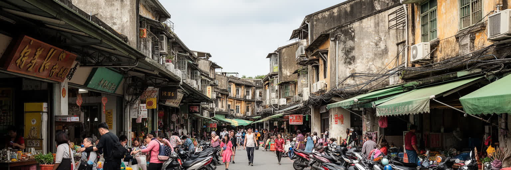
台南の暮らしは、路地の低層住宅、古い商家、郊外の戸建て、新しいマンション、農村集落が混ざります。台北に比べれば速度は緩やかに見えますが、科学園区周辺や鉄道駅の近くでは住宅需要が増え、地価や家賃の上昇が住民の選択を狭めます。高齢者が古い家で暮らし続ける一方、若い世帯は通勤、保育、駐車、学校、親の介護を考えて住む場所を選びます。スクーター中心の移動は便利ですが、歩行者には暑さ、段差、交通安全の課題があります。古家の修復は観光資源になる一方、住民の負担にもなります。台南の日常を評価するには、名所の保存だけでなく、住み続けられる家、涼しい道、近い市場、医療と公共交通がどれだけ整っているかを見る必要があります。観光客が好む路地の古さは、住民にとっては修繕費や防火、排水、バリアフリーの問題でもあります。生活都市としての台南を守るには、保存と更新を対立させず、古い家を安全に使い続ける支援が欠かせません。日常の質は、名物店の数よりも、子どもが遊べる公園、高齢者が通える診療所、雨の日にも使える市場で測られます。野球場や公園での応援、運河沿いの散歩も暮らしの余白を作ります。台南のゆっくりした印象の奥には、移動と介護をめぐる現実的な負担があります。古い近所ほど顔の見える関係が残りますが、若い人や転入者が入りにくいこともあります。開かれた地域運営が、台南の生活文化を次の世代へ渡す鍵になります。
台南の気候は、観光の明るい空だけでなく都市運営の難しさを作ります。長い暑さ、強い日差し、梅雨、台風、短時間豪雨、海に近い低地の排水は、住まい、道路、工場、農地、観光のすべてに影響します。市街地では古い排水路と新しい舗装がぶつかり、冠水しやすい場所では店舗の床高、バイクの置き方、通学路まで変わります。郊外では水田、養殖池、湿地、河川が都市の水を受け止めるが、開発が進むほど調整池や緑地の役割は重くなります。半導体産業には安定した水と電力が欠かせず、干ばつや豪雨は経済リスクにもなります。台南の水と気候を読むことは、風景としての南国ではなく、暑さと雨にどう耐える生活技術を見ることです。木陰、日除け、排水溝、透水舗装、避難情報、冷房の使える公共空間は、観光よりも先に住民の安全を支えます。気候変動で雨と暑さが極端になるほど、台南の都市計画は歴史保存と防災を同時に扱う必要があります。水は産業にも農業にも生活にも必要な資源であり、どこへ優先配分するかは政治的な問題になります。台南の未来は、水を多く使う成長と、水害に強い暮らしをどう両立させるかにかかっています。暑さ対策は高齢者、屋外労働者、観光客に直結するため、都市の快適さではなく命を守る基盤として扱う必要があります。気候への備えは、歴史都市の魅力を守る前提でもあります。水辺の管理も日常の政治です。
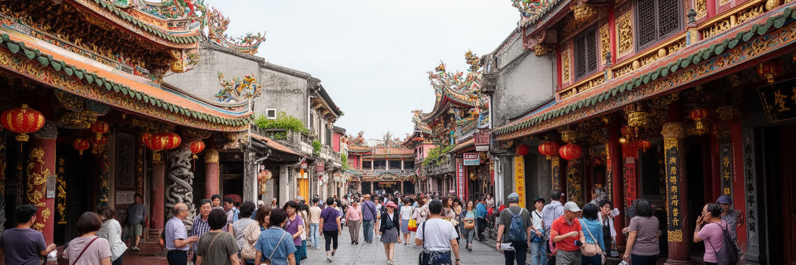
台南観光の魅力は、名所を点で巡るよりも、歩く途中で生活に触れることにあります。赤崁楼、孔子廟、安平古堡、神農街、林百貨、各地の廟、夜市は有名ですが、その間にある食堂、薬局、金紙店、果物屋、古い看板、学校、住宅の入口が都市の厚みを作ります。観光が増えると、古い建物の修復や店の継承に資金が回る一方、住民向けの市場や商店が観光向けに変わり、路地の混雑や騒音も起こります。遺産は保存対象にとどまらず、住民が使う空間でもあるため、写真映えと生活の静けさをどう両立させるかが都市の焦点になります。台南の観光は、過去を消費する旅ではなく、過去を使いながら暮らす都市を尊重できるかで質が決まります。歩行者空間、多言語案内、公共トイレ、混雑管理は観光客の便利さだけでなく、住民の負担を減らす装置でもあります。小さな店と生活道路を守れる観光こそ、台南の遺産を長く生かします。宿泊客が増えると、音楽のあるバー、夜市、深夜の軽食で夜の経済は潤いますが、ごみ、騒音、短期賃貸、交通の問題も増えます。観光政策は宣伝だけでなく、住民が疲れすぎない受け入れの設計で評価されるべきです。文化遺産の価値は、古い建物の数だけでは測れません。誰が語り、誰が修理し、誰が毎日使うのかを見れば、台南の観光はより深い学びになります。旅人が路地を急がず、生活の速度を乱さないことも、台南を楽しむ作法になります。
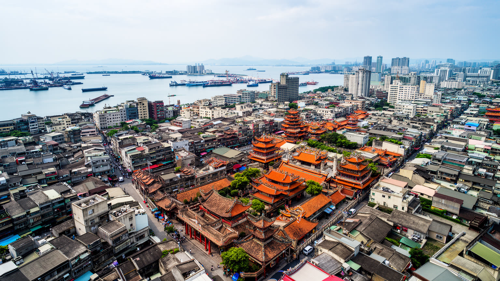
台南は、巨大金融都市のような世界都市ではありません。しかし、台湾の歴史、信仰、食、半導体、農漁業、海峡の地政学を一つの都市で読める点に重みがあります。旧都の路地には廟と市場が残り、郊外には科学園区と工業地帯が伸び、海辺には安平の記憶と湿地があります。観光客は古い建物と食を求めて来ますが、住民には暑さ、冠水、交通、住宅費、高齢化、産業用水、文化保存の課題が重なります。台南の価値は、過去を懐かしむだけでなく、新しい産業の圧力を受けながら生活文化をどう残すかにあります。ここでは廟の祭礼、夜市の一皿、工場のシフト、球場の応援、港の風、古家の修復が別々ではなく同じ都市の問題としてつながっています。世界の多くの都市が、歴史保存、観光化、技術産業、気候リスクの同時進行に直面しています。台南はその課題を低層の街路と強い生活文化の中で見せます。派手な規模ではなく、重なりの濃さがこの都市を読む理由になります。台南を歩くと、世界経済の半導体供給網と、廟の線香や朝の牛肉湯が同じ都市の中で隣り合います。大きな地図と小さな生活を同時に読ませるところに、台南の都市としての力があります。都市の未来は、この近さを壊さず、産業、信仰、食、教育、住まい、水を同じ議論に乗せられるかで決まります。台南は小さく見える場所から、世界と生活の接続を教える都市です。